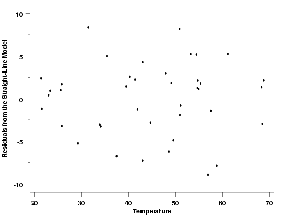
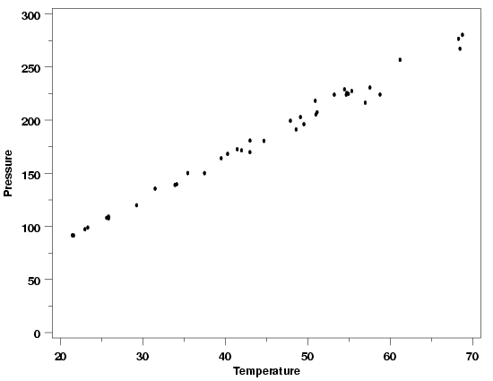
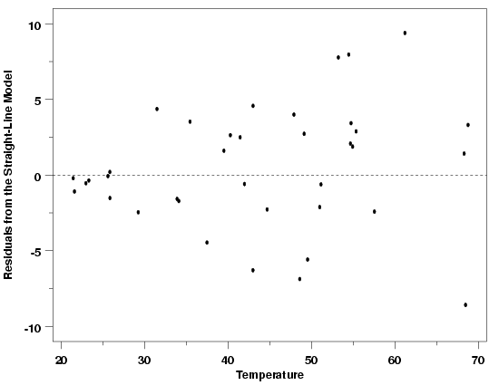
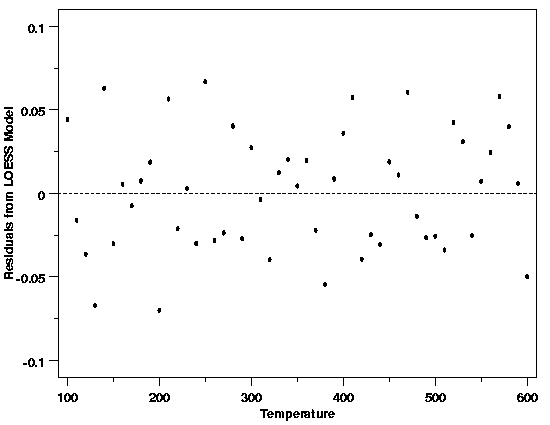
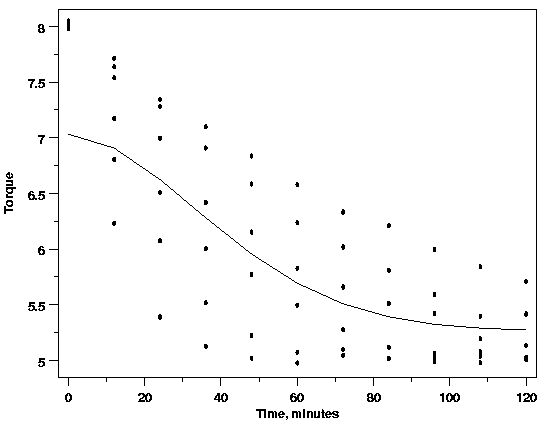
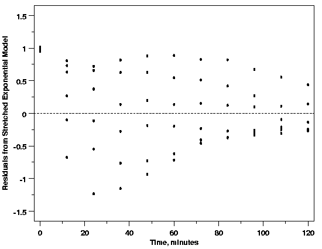

|
4.
Process Modeling
4.4. Data Analysis for Process Modeling 4.4.4. How can I tell if a model fits my data?
|
|||
| Scatter Plots Allow Comparison of Random Variation Across Data | Similar to their use in checking the sufficiency of the functional form of the model, scatter plots of the residuals are also used to check the assumption of constant standard deviation of random errors. Scatter plots of the residuals versus the explanatory variables and versus the predicted values from the model allow comparison of the amount of random variation in different parts of the data. For example, the plot below shows residuals from a straight-line fit to the Pressure/Temperature data. In this plot the range of the residuals looks essentially constant across the levels of the predictor variable, temperature. The scatter in the residuals at temperatures between 20 and 30 degrees is similar to the scatter in the residuals between 40 and 50 degrees and between 55 and 70 degrees. This suggests that the standard deviation of the random errors is the same for the responses observed at each temperature. | ||
| Residuals from Pressure / Temperature Example |  | ||
| Modification of Example | To illustrate how the residuals from the Pressure/Temperature data would look if the standard deviation was not constant across the different temperature levels, a modified version of the data was simulated. In the modified version, the standard deviation increases with increasing values of pressure. Situations like this, in which the standard deviation increases with increasing values of the response, are among the most common ways that non-constant random variation occurs in physical science and engineering applications. A plot of the data is shown below. Comparison of these two versions of the data is interesting because in the original units of the data they don't look strikingly different. | ||
| Pressure Data with Non-Constant Residual Standard Deviation |  | ||
| Residuals Indicate Non-Constant Standard Deviation | The residual plot from a straight-line fit to the modified data, however, highlights the non-constant standard deviation in the data. The horn-shaped residual plot, starting with residuals close together around 20 degrees and spreading out more widely as the temperature (and the pressure) increases, is a typical plot indicating that the assumptions of the analysis are not satisfied with this model. Other residual plot shapes besides the horn shape could indicate non-constant standard deviation as well. For example, if the response variable for a data set peaked in the middle of the range of the predictors and was small for extreme values of the predictors, the residuals plotted versus the predictors would look like two horns with the bells facing one another. In a case like this, a plot of the residuals versus the predicted values would exhibit the single horn shape, however. | ||
| Residuals from Modified Pressure Data |  | ||
| Residual Plots Comparing Variability Apply to Most Methods | The use of residual plots to check the assumption of constant standard deviation works in the same way for most modeling methods. It is not limited to least squares regression even though that is almost always the context in which it is explained. The plot below shows the residuals from a LOESS fit to the data from the Thermocouple Calibration example. The even spread of the residuals across the range of the data does not indicate any changes in the standard deviation, leading us to the conclusion that this assumption is not unreasonable for these data. | ||
| Residuals from LOESS Fit to Thermocouple Calibration Data |  | ||
| Correct Function Needed to Check for Constant Standard Deviation | One potential pitfall in using residual plots to check for constant standard deviation across the data is that the functional part of the model must adequately describe the systematic variation in the data. If that is not the case, then the typical horn shape observed in the residuals could be due to an artifact of the function fit to the data rather than to non-constant variation. For example, in the Polymer Relaxation example it was hypothesized that both time and temperature are related to the response variable, torque. However, if a single stretched exponential model in time was the initial model used for the process, the residual plots could be misinterpreted fairly easily, leading to the false conclusion that the standard deviation is not constant across the data. When the functional part of the model does not fit the data well, the residuals do not reflect purely random variations in the process. Instead, they reflect the remaining structure in the data not accounted for by the function. Because the residuals are not random, they cannot be used to answer questions about the random part of the model. This also emphasizes the importance of plotting the data before fitting the initial model, even if a theoretical model for the data is available. Looking at the data before fitting the initial model, at least in this case, would likely forestall this potential problem. | ||
| Polymer Relaxation Data Modeled as a Single Stretched Exponential |  | ||
| Residuals from Single Stretched Exponential Model |  | ||
| Getting Back on Course After a Bad Start | Fortunately, even if the initial model were incorrect, and the residual plot above was made, there are clues in this plot that indicate that the horn shape (pointing left this time) is not caused by non-constant standard deviation. The cluster of residuals at time zero that have a residual torque near one indicate that the functional part of the model does not fit the data. In addition, even when the residuals occur with equal frequency above and below zero, the spacing of the residuals at each time does not really look random. The spacing is too regular to represent random measurement errors. At measurement times near the low end of the scale, the spacing of the points increases as the residuals decrease and at the upper end of the scale the spacing decreases as the residuals decrease. The patterns in the spacing of the residuals also points to the fact that the functional form of the model is not correct and needs to be corrected before drawing conclusions about the distribution of the residuals. | ||

{kind=link}
{kind=link}
{kind=link}
{kind=link}
{kind=link}
{kind=link}